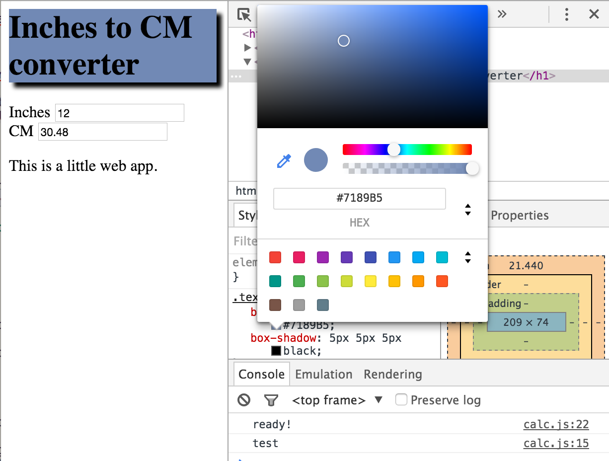

Opening your research up to the web - Day 1
Day 1 of Opening your Research was a big hit! Five people showed up. Three of them are young grad students. One is an MIT alum from the class of ’77, who took Patrick Winston’s (my dear boss) first Intro to Artificial Intelligence class. And finally there was an MIT alum in his 40’s who holds some of the early wind-energy patents. Great group! I’m disappointed that the ’77 alum won’t be sticking around, but the remainder sound like they will be here for the week. That’s enough time for us to get some things done.
Let’s take a look at the goals I write down earlier today and see if we met them.
- Start collaborative relationships with at least a few students interested in giving their research an online presence.
- Give everyone enough confidence to continue learning and implement their own data/tool-sharing when they’re ready
I probably was overly concerned here and set out easy goals to hit, because I think we did manage to hit these. We had nice chemistry as a group, people were comfortable to fit in and pipe up. I was really impressed by the students. At the same time, some had never heard of the tools I consider completely standard, like GitHub. One student in particular seemed to have an epiphany during the class, about how useful it would be if there were some system for organizing the efforts of people collaborating on software. I interrupted him to show him this pull request for snap, a Haskell web framework with a pretty active user base. His mind appeared to be blown. I’m really optimistic that this kind of exposure to open source for successful senior engineers will be great for both sides.
What did we do? Three things mainly:
- Personal introductions
- Round-table brainstorming on a project to tackle for the week
- Little demos of various online tools (Hakyll, GitHub, GitHub Pages, markup.rocks, and the Chrome DevTools
- Discussed when static sites are ok and when you need to turn to custom servers and AWS
- Set up an html/css/js inches-to-cm converter and hosted it on GitHub Pages
That last point got 50% done with all students in attendance. But we did a lot of talking and didn’t finish. So the last 50% was done with one student in the half-hour after class officially ended. This phase may have been my favorite, in fact, because I was free to make a lot of mistakes, and the student and I (I hope to memorize all their names next time) got to troubleshoot together. How does it work? Let me show you!
We started by initializing a new git repository.
mkdir inches && cd inches
git initand made our index.html file
<html>
<head> </head>
<body>
<h1 class="myheader">Inches to CM converter</h1>
Inches: <input type="text" id="inchesField"></input>
<br/>
CM: <input type="text" id="cmField" disabled="disabled"></input>
</body>
</html>We have our html tags, a couple of which have type and id attributes. For a really nice introduction to these kinds of things, check out CodeAcademy for a 2-3 hour interactive tutorial (in all honesty, I had done only a tiny bit of html and zero css, before taking the CourseAcademy classes on html and css). If you are still following along, venture on :).
I then wanted to demo a little bit of css styling. We made a file default.css:
.myheader {
background-color: green;
box-shadow: 5px 5px 5px black;
}We have to modify index.html to link this file in, by changing the <head> tag:
<head>
<link rel="stylesheet" href="default.css"></link>
</head>We then type file:///Users/greghale/Programming/inches/index.html in the browser’s url bar to see what we’ve done. Right-clicking on the big text header and choosing ‘Inspect’ in Chrome, we can pick a new color we like graphically and copy the color value back into default.css

With the basic layout (content in the .html, styles in the .css), we set out to do the unit conversion in JavaScript. First we made a couple changes to the .html file to link in a JavaScript file we would write, and also to bring in jQuery, which makes connecting the js code to the elements on the page (the DOM), a bit easier:
<html>
<head>
<link rel="stylesheet" href="default.css"></link>
<script src="http://code.jquery.com/jquery-1.12.0.min.js"></script>
</head>
<body>
<h1 class="myheader">Inches to CM converter</h1>
Inches: <input type="text" id="inchesField"></input>
<br/>
CM: <input type="text" id="cmField" disabled="disabled"></input>
<script src="calc.js"></script>
</body>
</html>Then the .js file, which we wrote piece-by-piece, loading in the work so far through index.html and testing parts by hand, before wiring them all together.
function calc (){
cmVal = inToCm( parseFloat(inchesField.value) );
cmField.value = cmVal;
}
function inToCm(x){
return (x*2.54);
}
function setup() {
console.log('test');
inchesField = $('#in')[0];
cmField = $('#cm')[0];
inchesField.onkeyup = calc;
}
$('document').ready(function(){
console.log('ready!');
setup();
});That wasn’t very much code (30 lines or so?). Here is the final result. Although there is a lot of jargon around the particular tags and functions, but what I hope to convey is that web development is entirely within reach. You just have to not be intimidated by learning the three syntaxes of html, css, and javascript. And you have to feel comfortable googling when you come up against a problem.
Inches to CM converter
Inches
CM
Hosting
The last step was to push this all to a waiting github repository, using the gh-pages branch to get free file hosting. (You won’t be able to copy-paste these commands, because they point to my github account, but this will work for your account if you have your ssh keys set up)
git checkout -b gh-pages
git add *.html
git add *.css
git add *.js
git commit -m "Initial commit"
git remote add origin git@github.com:imalsogreg/inches
git push origin gh-pagesResearch areas
Some of the research areas and web topics the students brought up:
- Clean energy
- Static sites (not hosted too well)
- Chemistry interactive
- Cancer therapy crowd-source game
I’m really looking forward to diving in and picking something concrete to work on in the next class!